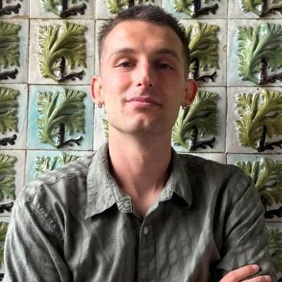

Dario Berti
AI engineer · Turin, Italy
I build agentic LLM systems meant to be trusted where mistakes are expensive. Right now that means my MSc thesis at LINKS Foundation: an agent that models criminal investigations, where a deterministic validator checks every generated answer against criminal-procedure rules, so the model never grades its own work.
I care more about the problem than the stack. Before LLMs I spent most of my time on distributed systems and DevOps (Kafka, Kubernetes, GitOps), and that still shapes how I build: specs traced to tests, failures tested on purpose, CI that says no.
I’m finishing an MSc in Computer Engineering at Politecnico di Torino (March 2027) and looking for AI engineer and AI research engineer roles.
Elsewhere
Selected work
- Agentic system for criminal investigations2026 MSc thesis, LINKS Foundation. Generator–validator architecture, near-zero hallucinations in expert-reviewed runs. Kotlin, React, Claude API.
- EuroTransit2026 Cloud-native ticket marketplace. Kafka saga with transactional outbox; zero lost or duplicated bookings across 8 chaos experiments.
- LetMeCook2026 Android social recipe app. Jetpack Compose, MVVM, real-time Firestore feed.
- Street-light crowdsensing2024 BSc thesis, University of Bologna. Phones as the only sensor for mapping city lighting.